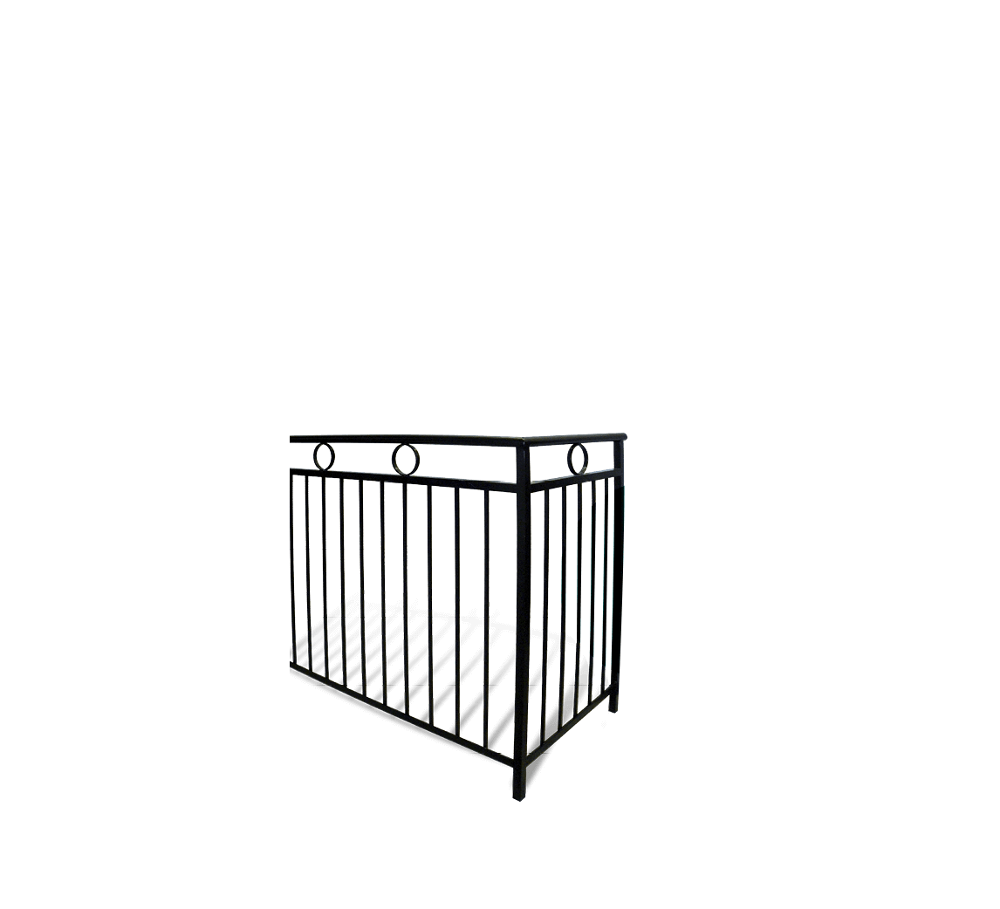
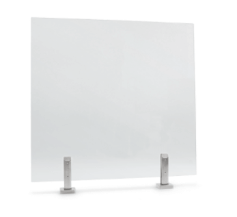
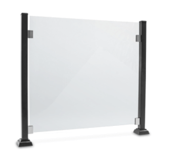
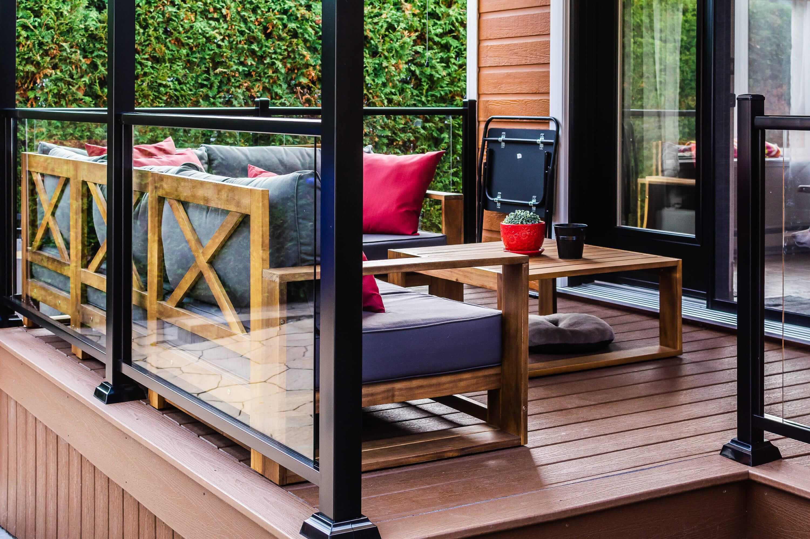

Rampes
Depuis sa création, l’entreprise a toujours eu le souci d’offrir la qualité à sa clientèle. C’est pourquoi nous choisissons des partenaires de confiance pour qui, comme nous, offrir des produits durables et sans entretien est au centre des préoccupations. Avec une sélection de près de 60 modèles en salle de montre, nous avons sans aucun doute la rampe parfaite pour votre terrasse ou balcon.
Quels sont vos besoins?
Passant d’un style Ornemental Classique à Campagnard chaleureux pour se rendre jusqu’au style tendance Moderne, vous trouverez assurément le modèle qui conviendra à l’architecture de votre résidence. Le design haut de gamme de ces rampes, rehaussera l’apparence et la valeur de votre propriété. Nos rampes sont fabriquées entièrement en aluminium d’un grade supérieur nécessitant aucun entretien.
- Offerte de façon standard en blanc, noir, brun et gris
- Choix de couleur en option
- Vaste sélection de poteaux, ornements et barreaux
-
Pourquoi choisir une rampe d’aluminium?
- Fini résistant au fil du temps et aux intempérie
- Excellent rapport qualité-prix
- Structure solide
Moderne et
tendance
standard
patrimoine

Soudé
Plus de 100 styles!
Basé sur trois concepts (citadin, jardin et champêtre), ces modèles sauront satisfaire vos gouts et exigences. Ces classiques dureront très longtemps. Les modèles Deluxe et Expert offrent une très grande rigidité et s’harmoniseront parfaitement à tous les styles par leur design sobre. Les rampes de PVC sont constituées de résine vierge de première qualité résistante au U.V.
- Offerte en blanc de façon standard
- Quincaillerie en acier inoxydable
- Disponible en plusieurs hauteurs
-
Pourquoi choisir une rampe de PVC?
- Fini très lustré pour un nettoyage facile
- Agencement parfait à tout type de résidence
- Disponibilité de barreaux et poteaux plus gros et travaillés
Résine vierge
de première qualité
STANDARD
DELUXE

DELUXE ++
Encore plus en succursale
Vous souhaitez conservez la vue pittoresque de votre environnement, vous serez charmé par le côté sophistiqué et pur des rampes en verre. Ces produits sont parfaits pour clôturer le pourtour de votre piscine. Le verre offre une vue imprenable sur le plan d’eau tout en étant sécuritaire. La simplicité des composantes est adaptée aux rigueurs de l’environnement québécois et perdureront dans le temps.
-
En option :
- Teinte et type de verre
- Epaisseur de verre
- Choix de quincaillerie 100% acier inox
-
Pourquoi choisir une rampe en verre?
- Aucun entretien
- Décor épuré
- Un investissement à long terme
Pour une vue
imprenable

Sur spigots

Entre poteaux
avec main courante
Grande sélection en magasin
MAIN COURANTE

Parfaite pour une installation au mur et sur garde-corps, nos systèmes de main-courante murale vous offrirons un maximum de sécurité. Elles sont également appréciées pour leur durabilité à l’extérieur. Vous trouverez à coup sur l’harmonie parfaite pour agencer votre escalier et mélanger l’utile à l’agréable.
- C hoix de profilé rond ou rectangle
- peinture poudre noir ou fini anodisé effet inox
- Sur mesure
Pour un maximum
de sécurité
PROFILÉ ROND
PROFILÉ RECTANGLE
Encore plus sur place

RÉALISATIONS
Laissez-vous inspirer par notre galerie d’images. Différents styles pour tous les goûts.